产品思维的核心不是"怎么做"，而是"做什么"和"为什么做"。在让 AI 写任何代码之前，我花了大量时间定义问题、设计框架、拆解模块。AI 是执行力极强的工具，但方向必须由产品思维来定。
明确业务目标
为什么需要这个平台？解决什么痛点？
定义用户角色
谁用？怎么用？权限怎么分？
设计功能架构
模块怎么拆？数据怎么流转？
选择技术底座
自研还是基于开源？为什么？
制定验收标准
什么算"做完了"？怎么衡量？
🎯 业务目标定义
团队需要对飞行采集的地图数据进行标注（道路、建筑、植被、车辆等），原有方式是单机版工具 + 手动传文件，存在严重瓶颈：
- 效率瓶颈：单机工具无法多人协作，10 个标注员排队等一台机器
- 质量失控：没有审核流程，标完就交，错误率高达 15%
- 进度黑盒：管理者无法实时看到每个项目的标注进度
- 数据孤岛：标注结果散落在各台电脑，汇总靠手动拷贝
核心诉求提炼：一个支持多人协作、有审核流程、可追踪进度、数据自动闭环的在线标注平台。
👥 用户角色与权限设计
先画清楚"谁能做什么"，这是后续所有功能设计的基础：
| 操作 | 管理员 | 标注员 | 审核员 | 观察者 |
|---|---|---|---|---|
| 创建/删除项目 | ✓ | ✗ | ✗ | ✗ |
| 分配任务 | ✓ | ✗ | ✗ | ✗ |
| 执行标注 | ✓ | ✓ | ✗ | ✗ |
| 审核/打回 | ✓ | ✗ | ✓ | ✗ |
| 导出数据 | ✓ | ✗ | ✓ | ✗ |
| 查看统计 | ✓ | ✗ | ✓ | ✓ |
关键决策：权限粒度到"项目级"而非"全局级"。同一个人可以在 A 项目是标注员，在 B 项目是审核员。
产品思维的关键动作：把一个大系统拆成可独立交付的小模块。每个模块有明确的输入、输出、验收标准。
🧩 模块拆解思路：为什么这样分？
- 按用户旅程拆：登录 → 选项目 → 领任务 → 标注 → 提交 → 审核 → 导出，每个环节是一个独立模块
- 按变更频率拆：UI 层改动最频繁，业务层次之，基础设施层最稳定。分开后改 UI 不影响底层
- 按验收难度拆：每个模块可以独立演示和验收。"标注工作台"做完就能让标注员试用
- 按 AI 对话粒度拆：一次对话解决一个模块的一个功能点。太大 AI 会丢失上下文，太小效率低
标注工具涉及 Canvas 渲染、帧同步、坐标变换等复杂交互，自研周期至少 3-6 个月。
只支持单机、单人、图片标注。无协作、无审核、无视频支持。不满足核心需求。
数据必须上传到第三方服务器，飞行数据涉密，安全合规不允许。
Intel 开源、社区活跃（GitHub 12k+ star）、功能覆盖 90% 需求、支持私有化部署。剩余 10% 通过 AI 二次开发补齐。
选型原则：能用成熟方案就不造轮子。选 CVAT 不是因为它完美，而是因为它的"不完美"恰好是 AI 可以补齐的部分。
📋 每个模块的"完成"定义
- 中文化：所有可见文字为中文，专业术语（IoU、COCO）保留英文，无中英混杂
- 权限体系：前端隐藏无权限按钮 + 后端 API 返回 403，双重校验缺一不可
- 标注工作台：1000 个标注框不卡顿，拖拽/缩放/旋转流畅，撤销/重做正常
- 审核流程：标注→提交→审核→通过/打回，状态流转正确，打回后可编辑
- 数据导出：COCO/VOC/YOLO 格式正确，中文标签不乱码
- 部署：一键启动，域名访问，崩溃自动重启
💡 这些验收标准后来成了每次 AI 对话的"结尾指令"——"做完后帮我验证以上几点"。
AI 生成代码后，产品思维最重要的工作不是"看懂代码"，而是判断结果对不对、体验好不好。以下用飞书多维表格中的真实问题截图，展示我是怎么判断的、怎么把问题描述给 AI 的、以及多轮迭代直到满意的过程。
🔄 产品思维驱动 AI 的三步节奏
Step 1：描述需求
用产品语言说清楚"要什么"、"不要什么"、"验收标准是什么"。不说"帮我写个函数"，而说"我需要一个项目级权限系统，标注员只能看到自己的作业"。
Step 2：判断对不对
部署后实际操作，截图/录屏。看功能是否按预期工作、数据是否正确、流程是否跑通。不需要看懂代码，只需要看"结果对不对"。
Step 3：判断好不好
功能对了之后，还要看体验好不好：操作是否流畅？提示是否清晰？流程是否自然？这是产品思维独有的判断维度。
📌 案例 1：多边形共边与切割 — 从"能用"到"好用"的 5 轮迭代
这是整个项目中迭代次数最多的功能。标注员需要标注紧密相邻的物体（如道路和建筑），要求两个框之间没有缝隙（共边），并且新框能自动切割旧框的重叠部分。AI 第一版实现"能用"，但离"好用"差了很远。
🔵 第 1 轮：提出需求
我给 AI 的描述："需要有选择两个相邻的框进行共边的功能，使两个框之间不会存在缝隙，但它们还是两个独立的框；还需要有切割功能，在已经标注的框上标注新的属性框时，点击切割功能就能将重合的地方切割成新标的框属性，且二者自动共边，不会留有缝隙。"
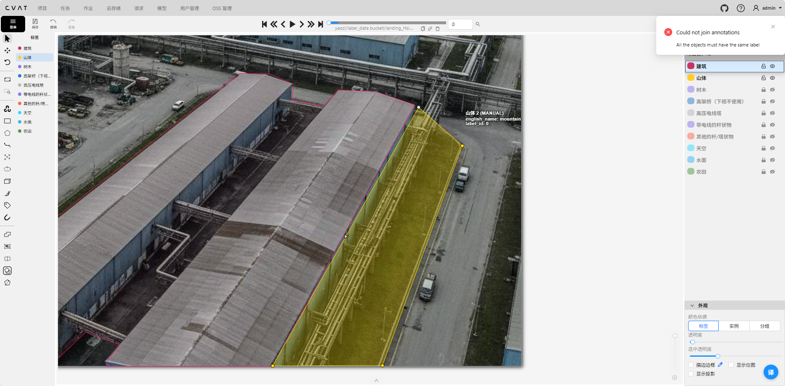
▲ 飞书表格 Record 23 附件：共边功能需求示意
🟡 第 2 轮：判断"对不对" — 共边后显示有问题
我发现的问题："共边后不要只显示一条边的颜色，两条都要显示。而且现在共边完一个之后，不会让用户选择图像，而是自动跳出选择 1、2 图形就提示共边完成，没有任何自主空间。所以共边完红绿两个框之后，白框就无法再与它们进行共边了。"
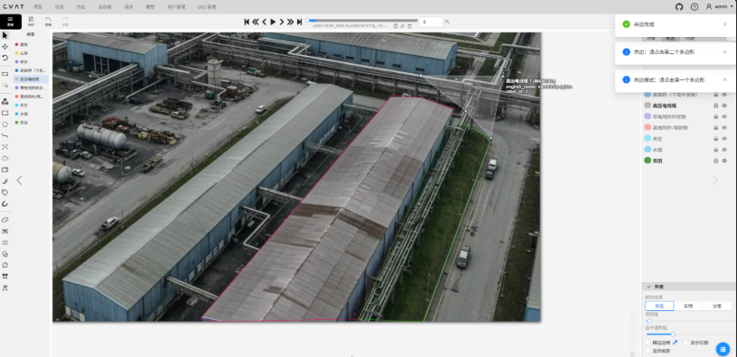
▲ 飞书表格 Record 24 附件：共边后只显示一条边的颜色，且无法继续与第三个框共边
产品判断：功能逻辑"对了"（确实能共边），但交互"不对"（用户没有自主权，流程被强制中断）。
🟢 第 3 轮：判断"好不好" — 交互体验优化
我给 AI 的反馈："共边和切割都不要有这种提示框弹出来，界面很乱。共边逻辑不分图像先后顺序，反正点到的两个图像相邻的边贴在一起即可。而切割则默认第一个点击的框对第二个点击的框做切割。选择框时，需要有①②这种序号出现在点击的框位置作为提醒。"
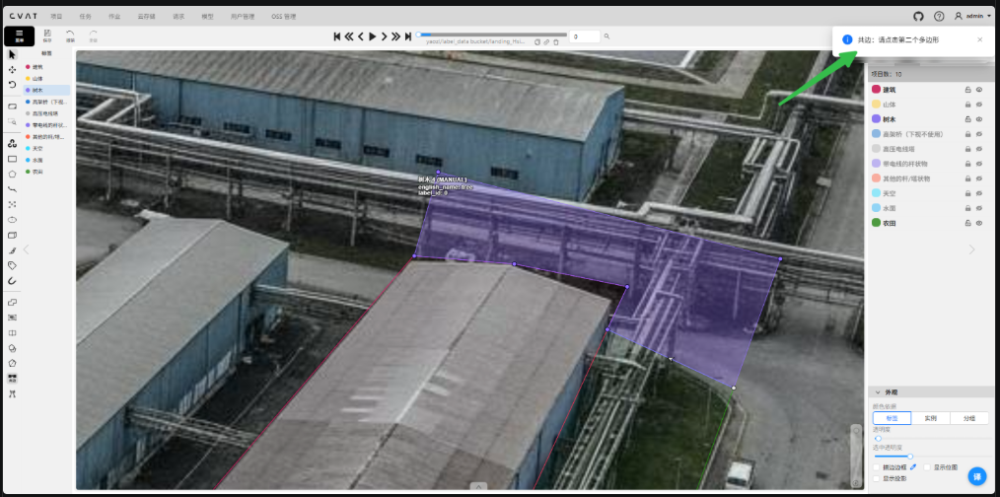
▲ 飞书表格 Record 25 附件：弹窗提示太多，界面混乱
产品判断：功能"对了"，但体验"不好"。弹窗打断操作流、没有序号提示。这些是纯产品体验问题，AI 不会主动想到。
🔵 第 4 轮：切割逻辑修正
我发现的问题："画的一个大框与两个框重叠，切割出来的框形状不是直接按标注原形状再切去重叠部分共边，而是会收缩框体，以及另一个重叠框还是重叠没切割。"
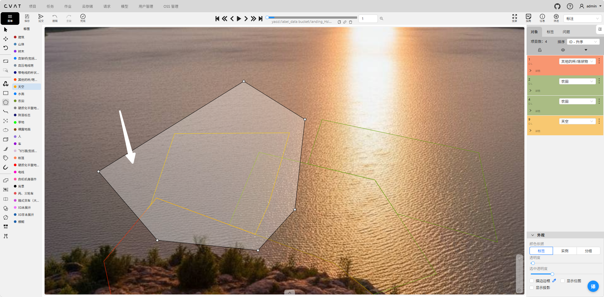
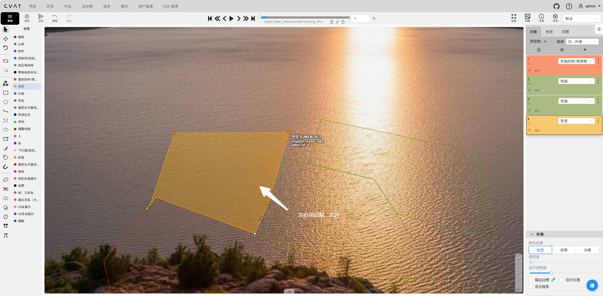
▲ 飞书表格 Record 36 附件：切割后框体收缩变形，且多框重叠时只切了一个
给 AI 的精确描述："切割应该切出这个蓝框的效果，与内部的框完全不重叠，只将中间重叠部分掏空。"
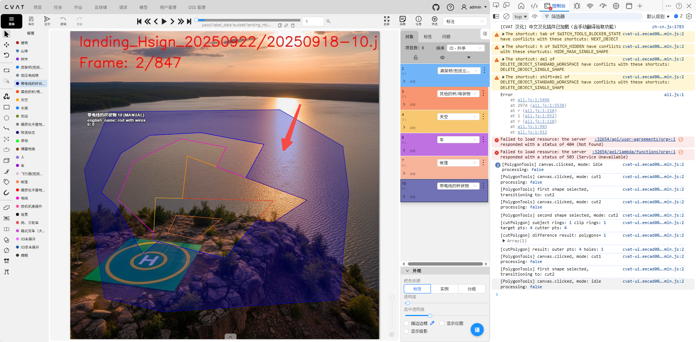
▲ 飞书表格 Record 52 附件：我画的期望效果示意图——告诉 AI "我要的是这个"
🟢 第 5 轮：最终验收通过
经过 5 轮迭代，共边和切割功能最终满足需求：两个框共边无缝隙、切割后形状不变形、多框重叠正确处理、交互流畅无弹窗。最终产出了 817 行的 polygon-operations.ts 组件。
✅ 产品思维的价值：AI 第一版就能"跑"，但只有产品思维能判断"跑得对不对"、"跑得好不好"，并精确描述差距在哪里。
📌 案例 2：帧级工作流 — 判断"流程对不对"
标注平台的核心流程是：领取帧 → 标注 → 提交 → 审核 → 通过/驳回。AI 实现后，我需要判断每个环节的状态流转是否正确。
🔵 发现问题：提交后状态没变
我的判断："帧数在标注点击提交后状态还是'待领取'，正确应该变成'待验收'。然后只有审核账号可以操作标记出错或者打回标注环节。"
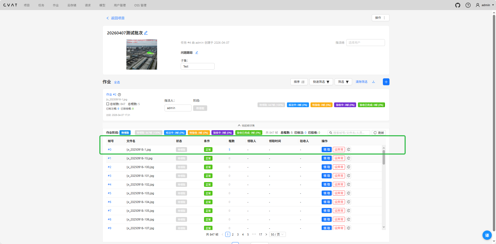
▲ 飞书表格 Record 28 附件：提交后状态未从"待领取"变为"待验收"
产品判断：这是典型的"功能做了但流程不对"。AI 实现了提交按钮，但没有联动状态机。
🟡 继续发现：审核无法切换
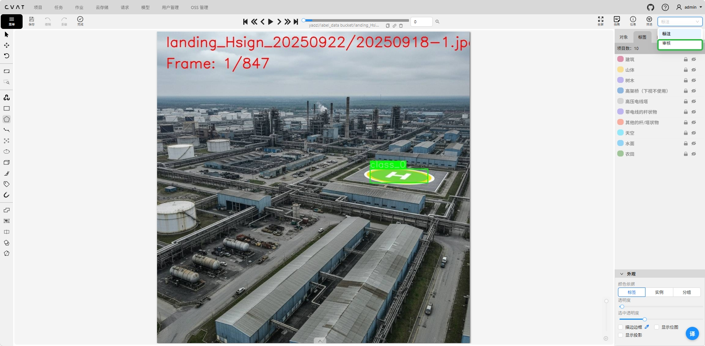
▲ 飞书表格 Record 20 附件：审核按钮点击无反应
🟢 最终：完整的帧级工作流
经过多轮修复，最终实现了完整的帧级状态流转：unclaimed → annotating → review_pending → reviewing → completed/rejected。
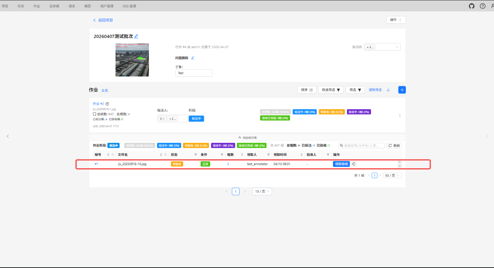
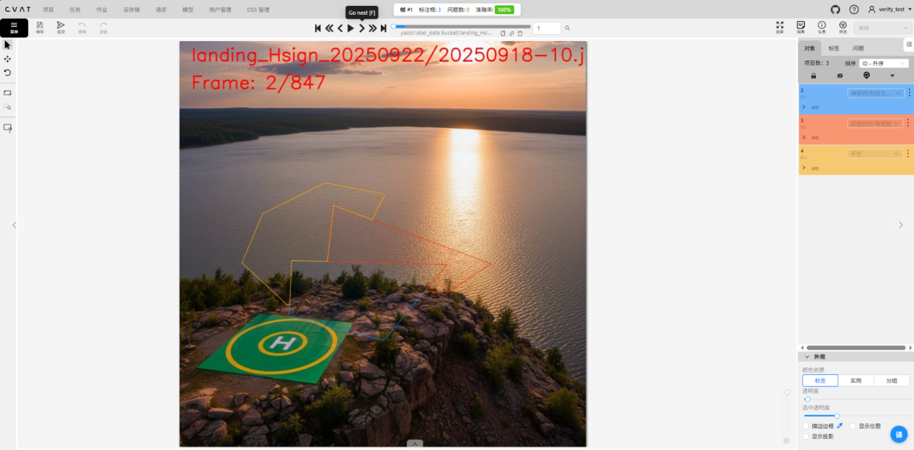
▲ 飞书表格 Record 49 附件：最终实现的帧列表和帧级工作流详情
📌 案例 3：标注功能 Bug 的测试与修复 — 用 GIF 录屏判断"到底哪里不对"
标注功能开发完成后，我通过实际操作逐一测试，发现了多个功能 Bug。有些问题用文字描述不清楚，必须用截图甚至 GIF 录屏才能让 AI 准确理解并修复。
🔵 问题 1：打点后框体飘走（P0）
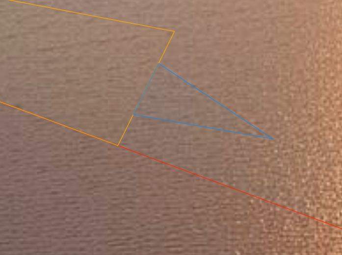
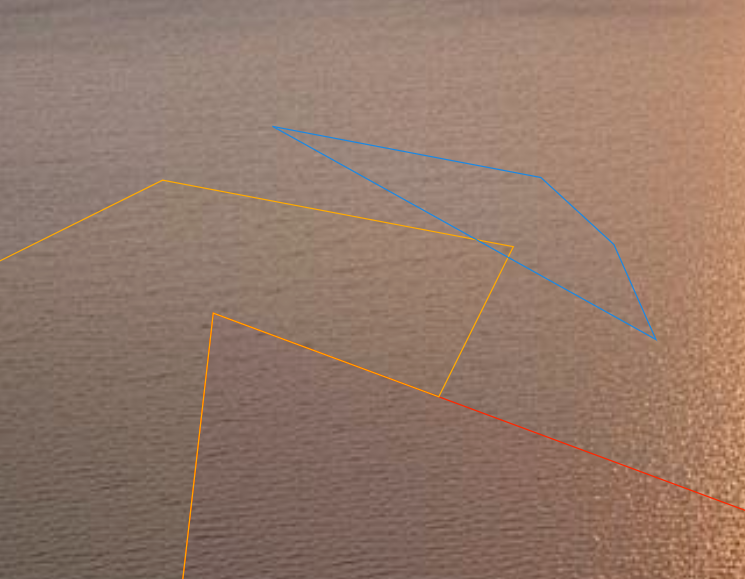
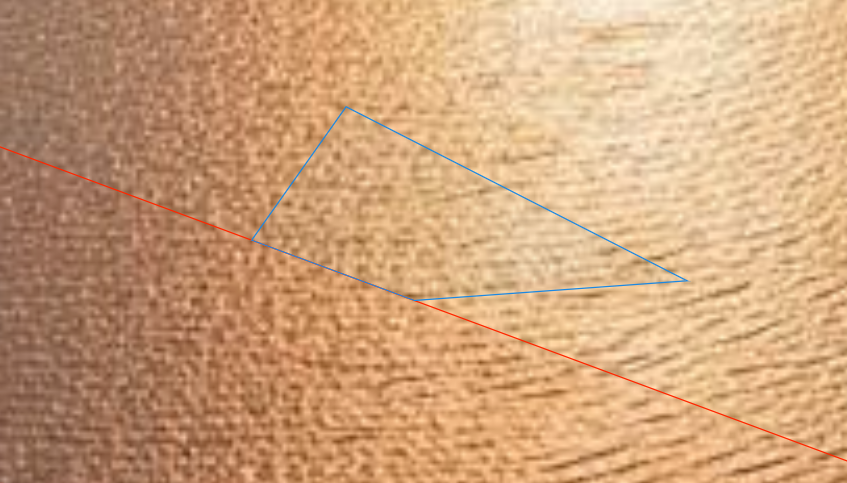
▲ 飞书表格 Record 45 附件（3张）：打点标注后框体飘到物体外面，无法吸附边缘
🟡 问题 2：用 GIF 录屏展示框体错乱（P0）
我的描述："围绕单一物体打点时标注结束后框体会飘到外面无法吸附并框体错乱。"——文字说不清楚"错乱"是什么样，所以我录了 GIF。
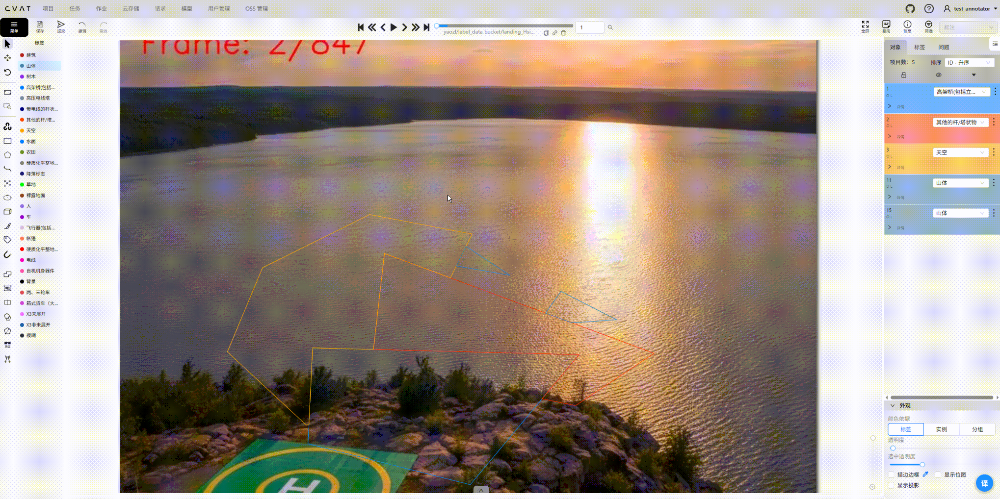
▲ 飞书表格 Record 46 附件（GIF 动图）：完整展示打点→框体飘走→错乱的全过程
产品判断：GIF 录屏让 AI 一次看懂问题，直接定位到坐标计算逻辑。
🔵 问题 3：横穿物体后切割消失（P1，GIF）

▲ 飞书表格 Record 69 附件（GIF 动图）：横穿已标注物体后，切开的框消失了一个
📌 案例 4：权限与用户管理 — 判断"谁能做什么"
🔵 问题：权限选择器是空白的（P1）
我的判断："用户管理权限只有空白正方形，没有对应标注员、审核员、管理员的权限分配，而且选择完保存时报错。"
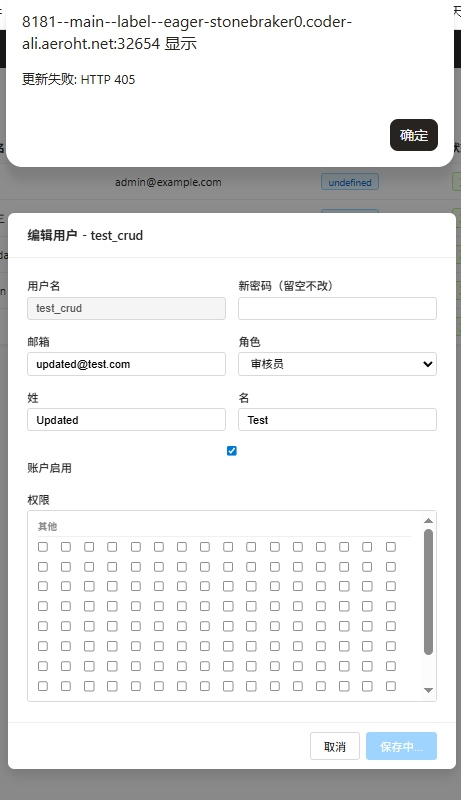
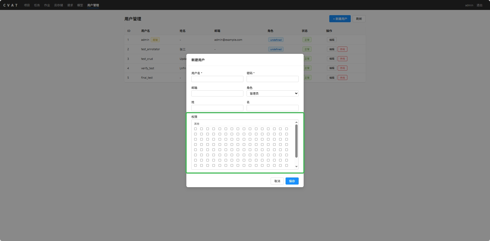
▲ 飞书表格 Record 15 附件：权限选择器只有空白方块 + 保存时报错
🟡 问题：账号切换功能需求（P0）
我的需求描述："admin 管理员账号可以免密码切换所有账号，普通管理员可以免密切换审核、标注账号，但不能免密切换同级管理员。"
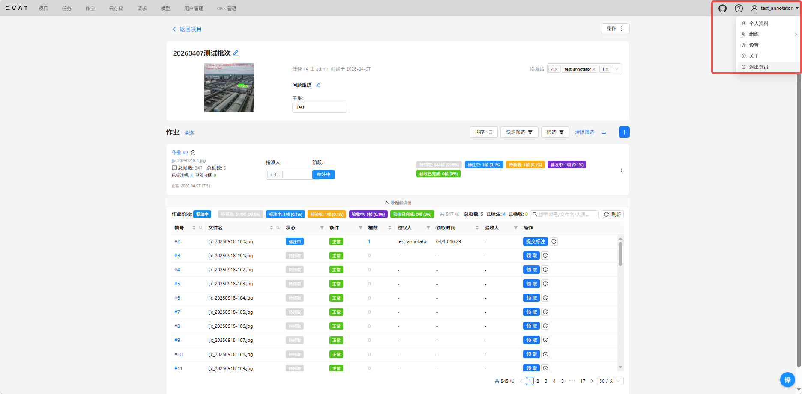
▲ 飞书表格 Record 51 附件：我标注了账号切换功能应该放在哪里
📌 案例 5：数据导入 — 判断"结果对不对"
🔵 问题：847 帧被拆成 45 个任务（P0）
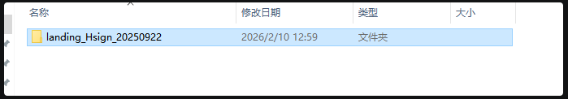
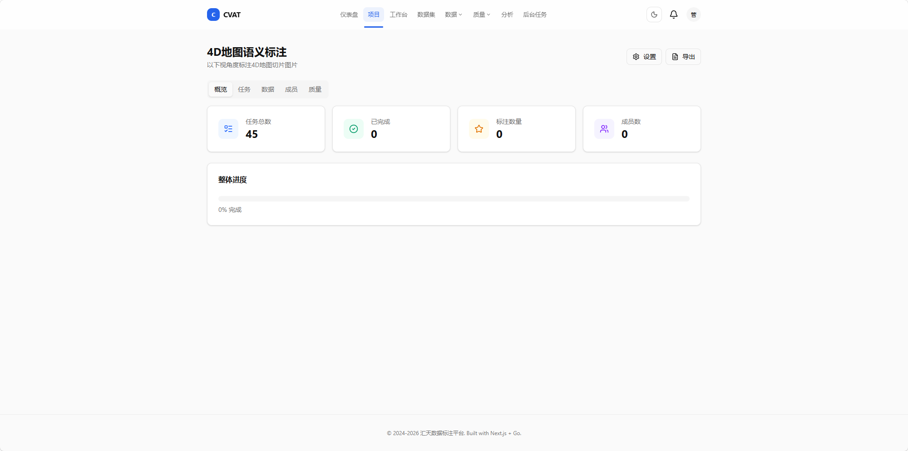
▲ 飞书表格 Record 81 附件：一个文件夹应该形成 1 个任务，却被拆成了 45 个
产品判断：AI 实现了导入功能，但没有理解"一个文件夹 = 一个任务"的业务规则。
🟡 问题：导入后图片不显示（P0）
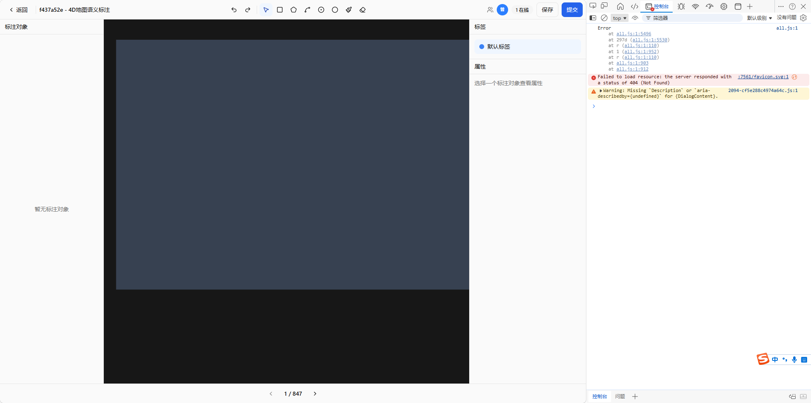
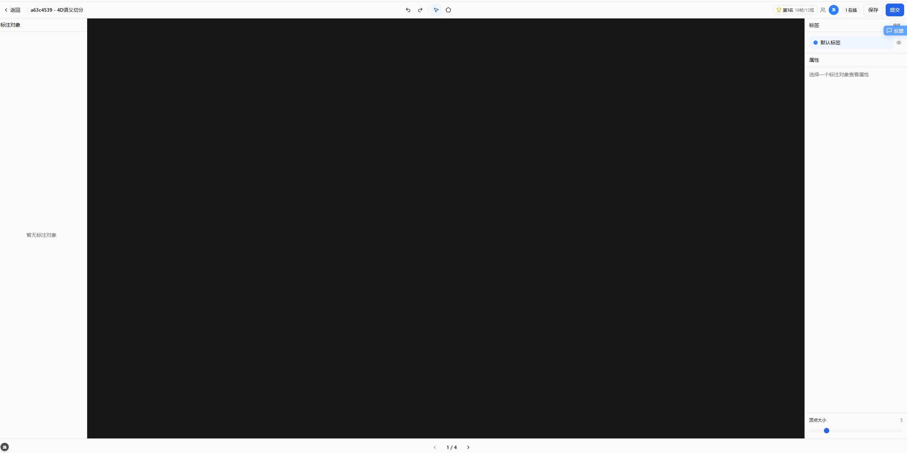
▲ 飞书表格 Record 85/100 附件：导入 JPG 数据后图像不显示 / 打开是黑色背景
Phase 2 核心总结：
📌 "对不对"= 功能是否按预期工作？数据是否正确？流程是否跑通？→ 用截图/录屏证明"哪里不对"
📌 "好不好"= 操作是否流畅？提示是否清晰？交互是否自然？→ 用产品感觉判断"哪里可以更好"
📌 给 AI 的信息= 截图 + "我做了什么" + "我看到了什么" + "我期望看到什么" → 三要素缺一不可
产品思维不需要看懂代码，但需要看得懂结果。截图和 GIF 是最有力的"需求文档"。
经过 1 个月迭代（含摸索期），平台从一张白纸变成了完整可用的标注系统。以下 6 大模块全部由 AI 编码实现，产品思维负责规划、验收和调优。
标注工作台
支持矩形框、多边形、语义分割、关键点、视频帧等多种标注方式。Canvas 高性能渲染，万级目标不卡顿。撤销/重做、快捷键、自动保存一应俱全。
共边与切割
多边形共边无缝隙、自动切割重叠区域、多框同时处理。817 行专用算法组件，经过 5 轮产品验收迭代打磨。
权限与组织
项目级 RBAC 权限体系，管理员/标注员/审核员/观察者四种角色。前端隐藏 + 后端 403 双重校验，账号切换功能。
帧级工作流
领取→标注→提交→审核→通过/驳回的完整流程。帧级状态追踪、批量领取/解绑、驳回图查看、每日统计面板。
数据导入导出
支持图片/视频/文件夹批量导入，导出 COCO、VOC、YOLO 等主流格式。中文标签不乱码。
全中文界面
1784 行汉化脚本，500+ 静态词条 + 动态模式匹配 + 日期转换。MutationObserver 实时翻译，防闪烁处理。
整个平台不是一次性"让 AI 写出来"的，而是拆成 7 个开发阶段，每个阶段有明确的输入输出和验收标准。
🗂️ 7 个开发阶段全景
| 阶段 | 名称 | 核心产出 | 验收标准 |
|---|---|---|---|
| 1 | 开源工具调研与选型 | 调研 CVAT / Label Studio / LabelImg / VoTT 等 6 款工具，输出选型报告 | 选型报告 |
| 2 | 源码部署与环境搭建 | 克隆 CVAT develop 分支，搭建 PostgreSQL + Redis + OPA + Nginx 环境 | 平台可访问 |
| 3 | 前端全量汉化 | 编写 1784 行汉化脚本，Nginx sub_filter 注入，MutationObserver 实时翻译 | 无英文残留 |
| 4 | 后端功能扩展 | 新增 3 个 Python 文件（1585 行）：用户管理、帧级工作流、OSS 云存储，共 43 条路由 | API 可调通 |
| 5 | 前端深度定制 | 新增 12 个组件文件（4695 行）+ 修改 41 个核心组件 | 功能可操作 |
| 6 | CVAT-DO 自建平台 | Go + Gin 后端（49 个 API），Next.js 前端，RBAC 23 项权限 | 双端可用 |
| 7 | 部署与测试 | 生产/测试双环境，Nginx 配置优化，CSRF/CORS 适配 | 稳定运行 |
产品思维不需要画技术架构图，但需要想清楚：用户从哪进来、能做什么、数据怎么流转、谁能看到什么。
👤 用户入口
浏览器访问 → 登录 → 进入平台
📁 项目管理
创建项目 / 设置标签 / 导入数据
👥 人员管理
分配角色 / 账号切换 / 权限设置
📋 任务分配
创建任务 → 指派标注员 → 帧级领取
✏️ 标注工作台
矩形 / 多边形 / 共边 / 切割 / 视频帧
📤 提交审核
标注完成 → 提交 → 等待审核
✅ 审核验收
审核员逐帧审查 → 通过 / 驳回
📊 数据统计
每日标注量 / 驳回率 / 排行榜
📦 数据导出
COCO / VOC / YOLO 格式导出
产品思维画架构的原则：不写端口号、不写技术栈、不写数据库表。只画"用户能做什么"和"数据怎么流转"。技术实现是 AI 的事。
⚙️ CVAT 二次开发（标注引擎）
后端新增（3 个文件，1585 行）
| 文件 | 行数 | 功能 |
|---|---|---|
user_management_views.py | 475 | 用户管理：列表/创建/更新/删除/改密/切换身份/搜索 |
workflow_views.py | 783 | 帧级工作流：claim/submit/review/reject/批量/统计/排行榜 |
oss_views.py | 327 | OSS 云存储：配置管理/目录浏览/从 OSS 创建任务 |
前端新增（12 个组件，4695 行）
| 组件 | 行数 | 功能 |
|---|---|---|
polygon-operations.ts | 817 | 多边形裁切/重叠检测/强制切割算法 |
job-frame-detail.tsx | 578 | Job 帧级详情面板 |
user-management.html | 454 | 独立用户管理页面 |
oss-management.html | 288 | 独立 OSS 管理页面 |
stats-leaderboard-panel.tsx | 215 | 标注统计排行榜 |
post-draw-attribute-modal.tsx | 205 | 绘制后属性填写弹窗 |
multi-user-selector.tsx | 123 | 多人指派选择器 |
reject-annotation-button.tsx | 111 | 驳回标注按钮 |
submit-annotations-button.tsx | 99 | 提交标注按钮 |
frame-access.ts | 85 | 帧级访问权限控制 |
label-selector-panel.tsx | 78 | 标签选择面板 |
sync-to-test-button.tsx | 57 | 同步到测试环境 |
🚀 CVAT-DO 自建平台（管理系统）
user 端（29 个 API）
| 模块 | 功能 |
|---|---|
| 标注 | 2D（矩形/多边形/折线/点/椭圆/Cuboid/骨骼/Mask/Brush）、3D 点云、视频 Track |
| 工作流 | 帧级工作流（claim → annotate → submit → review → complete/reject） |
| 导入/导出 | COCO/YOLO/VOC/CVAT XML/LabelMe，zip 打包 + OSS 路径 |
| 协作 | 实时通知、Issue 系统、质量控制、IAA 分析 |
manager 端（20 个 API）
| 模块 | 功能 |
|---|---|
| 用户管理 | 审核、创建、批量操作、RBAC 权限编辑器 |
| 监管 | 全局视图、重新分配、强制状态变更 |
| 系统 | 公告、质量总览、备份、健康监控、审计日志 |
| 分析 | 数据仪表盘（7 天趋势）、CSV 导出 |
权限体系（RBAC 23 项）
三级角色：标注员（5权限） → 审核员（12权限） → 管理员（23权限全部）
产品思维的决策：不改源码，用运行时翻译——CVAT 上游升级时不会冲突。
| 特性 | 实现方式 |
|---|---|
| 静态词典 | 500+ 词条覆盖导航/登录/标注工具/设置/云存储/错误提示 |
| 动态模式匹配 | 正则匹配 "N minutes ago" → "N 分钟前" |
| 日期转换 | "April 3rd 2026" → "2026-04-03" |
| MutationObserver | 实时监听 DOM 变化，小批量同步/大批量 rAF 合并 |
| 防闪烁 | body opacity:0 → 翻译完成后显示 |
| Ant Design 适配 | 特殊处理 Select、Pagination 等组件 |
| 翻译拾取器 | 右下角浮动"译"按钮，点击未翻译文字弹出翻译对话框 |
| 自定义词典 | localStorage 持久化，用户可增/删翻译 |
以下问题全部来自飞书多维表格的真实记录（100+ 条），配有实际截图/GIF。每个问题完整展示：现象 → 原因 → AI 解决 → 验证。
🧠 排查四步法
1️⃣ 复现
截图/录屏/F12 报错。把"现象"描述清楚。
2️⃣ 定位
前端 UI？后端 API？部署配置？
3️⃣ 喂 AI
截图 + 我做了什么 → 看到什么 → 期望什么。
4️⃣ 验证
部署验证，通过标记"已解决"，否则继续迭代。
▲ GIF：打点→框体飘走→错乱全过程
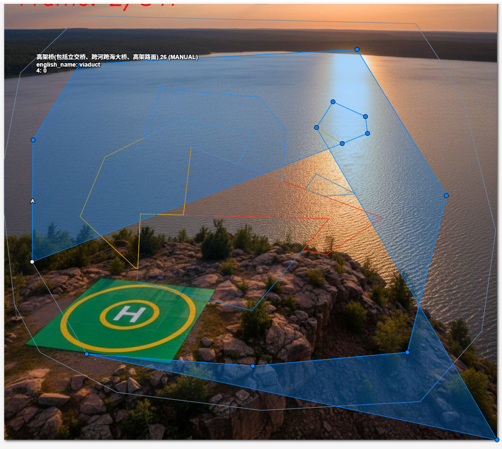
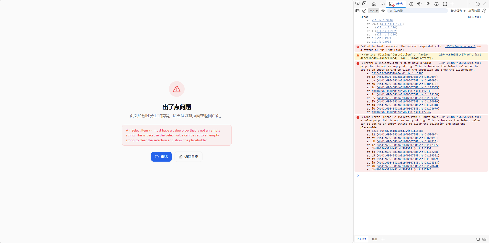
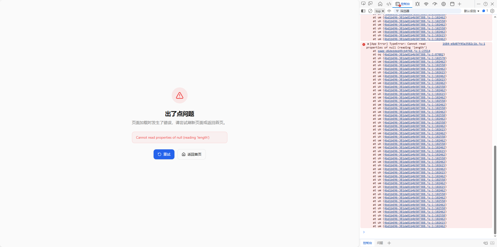
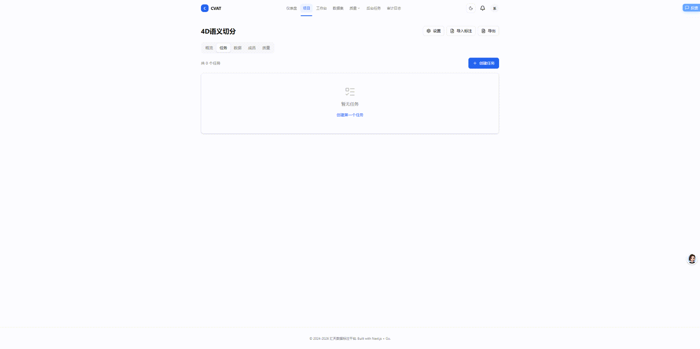
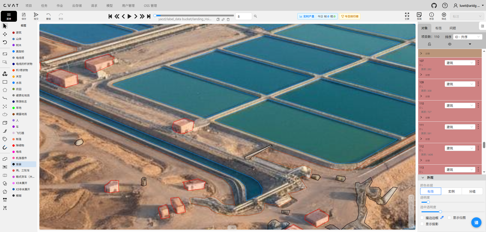
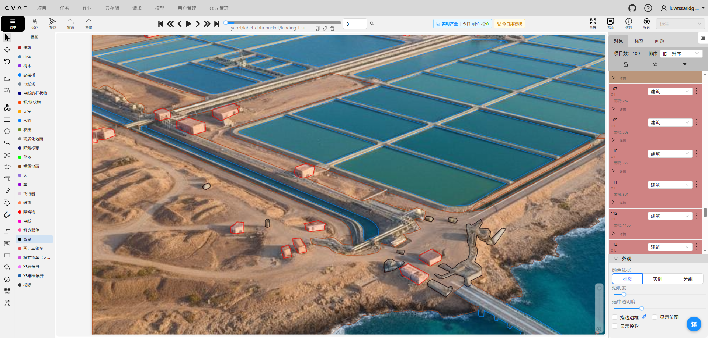
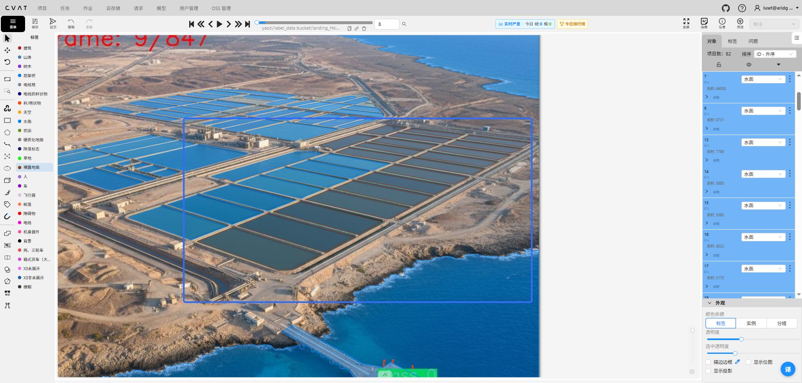
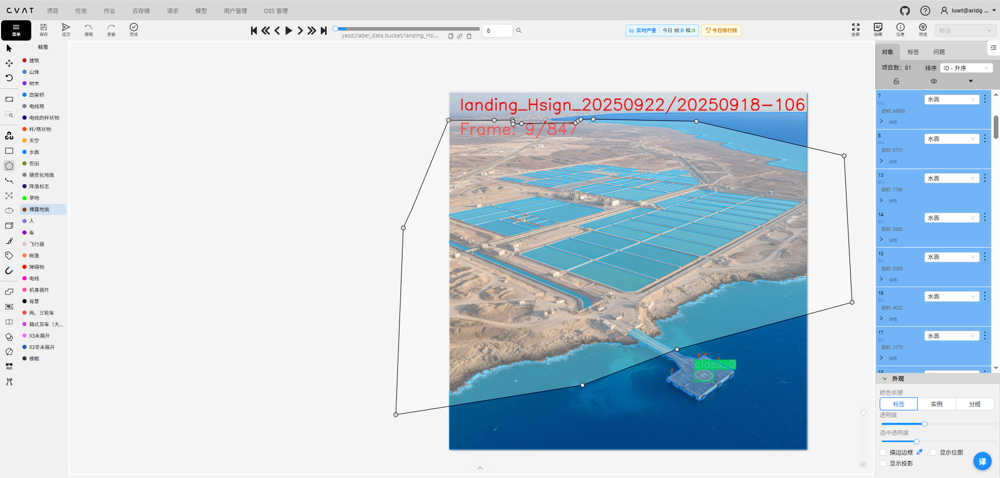
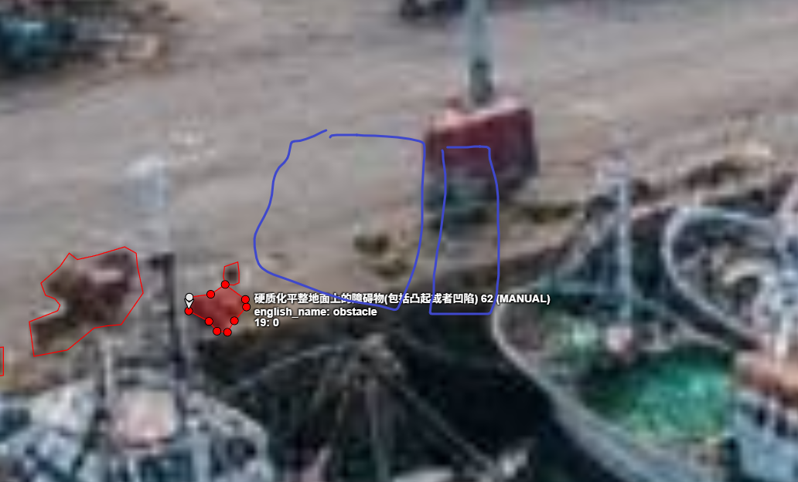
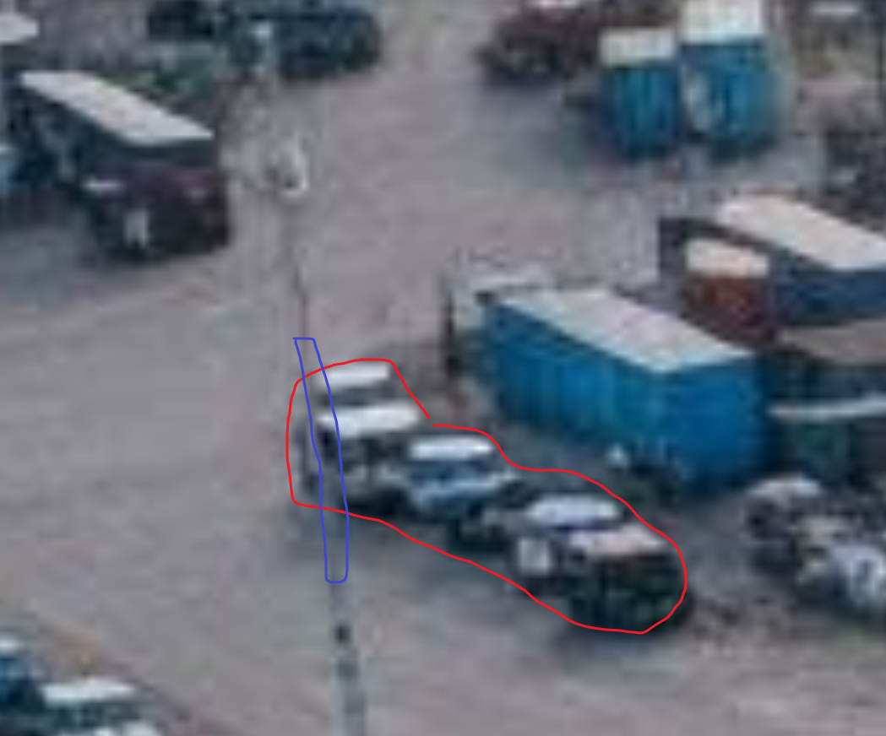
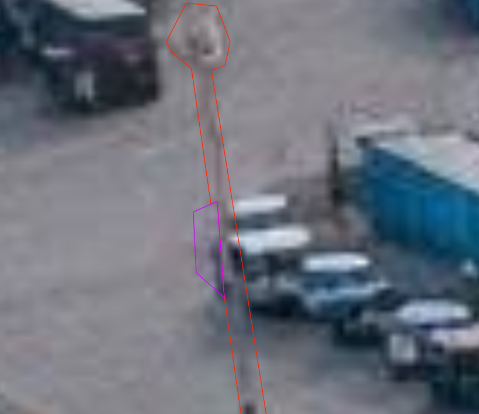
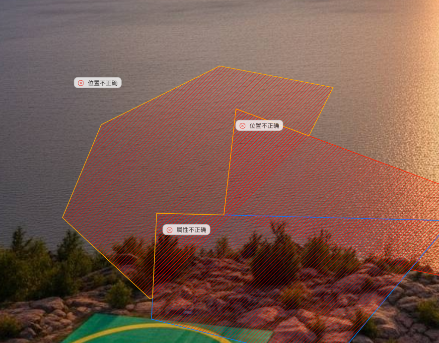
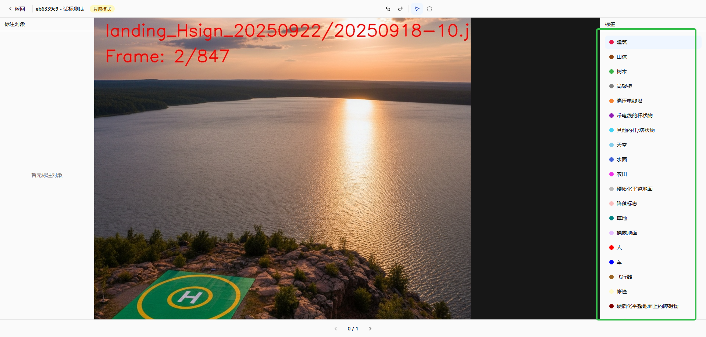
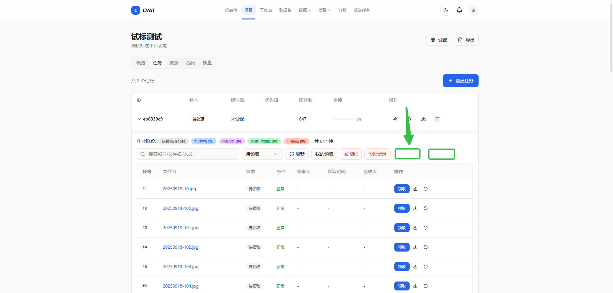
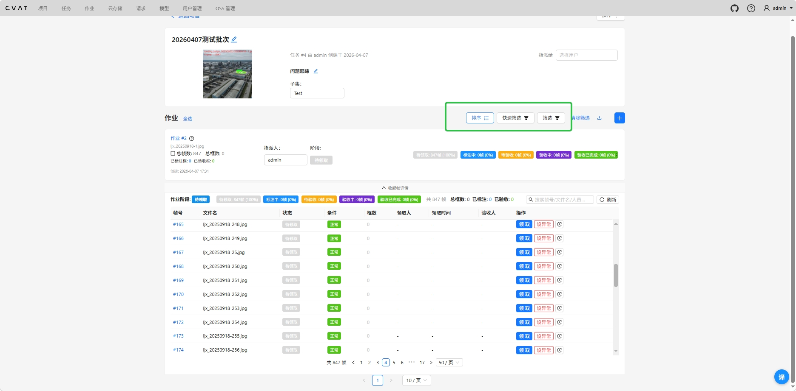
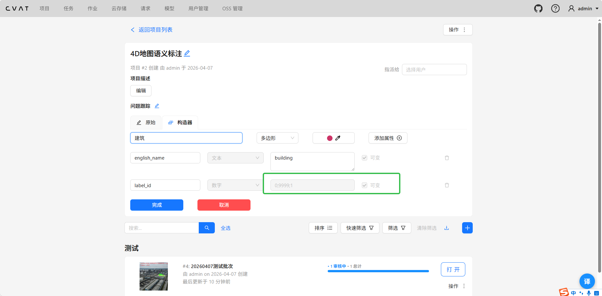
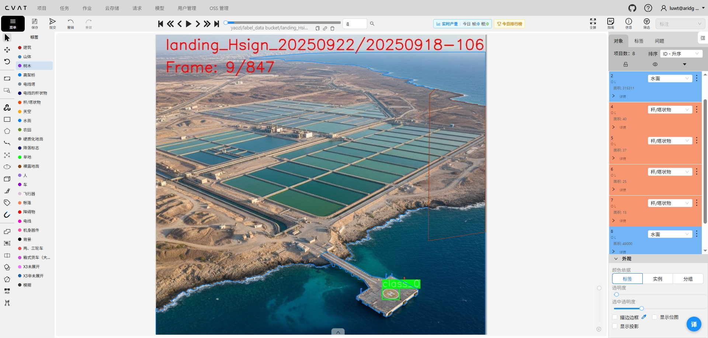
📊 问题分类统计与规律
📅 第 1 周：部署问题为主——平台从"不能跑"到"能跑"
📅 第 2-3 周：UI 和功能逻辑——平台从"能跑"到"能用"
📅 第 4 周起：性能优化和边缘场景——平台从"能用"到"好用"
这些不是"小 bug"，而是架构级的坑——每一个都可能导致项目方向调整。产品思维的价值在于：遇到坑时快速判断"绕过去"还是"填上它"。
📝 踩坑总结：5 个判断原则
这个项目验证了一个核心命题：产品思维 + AI = 独立交付能力。关键不在于 AI 多强，而在于产品思维的规划质量决定了 AI 的产出质量。
规划先行
先画清楚"做什么"再让 AI 动手。没有清晰的需求描述，AI 只会生成"正确但无用"的代码。产品思维的框架能力是 AI 的导航仪。
小步快跑
不要一次给 AI 一个大需求。拆成小模块，每次验证一个点。100 个小对话 > 1 个大对话。每个模块做完就验收。
验收驱动
每次对话前先想好"怎么验证做对了"。有验收标准才能判断 AI 的产出是否合格。验收标准就是给 AI 的考试题目。
（不熟悉排查方法，描述不够精确）
（掌握了"现象→原因→AI修复"的节奏）
（能精准描述问题，AI 一次命中）
💡 效率提升的关键不是 AI 变强了，而是产品思维描述问题的能力变强了。
| 决策点 | 选择 | 产品思维的判断依据 | 效果 |
|---|---|---|---|
| 标注引擎 | CVAT 二次开发 | 自研 3-6 个月，用开源省时间 | ✅ |
| 管理平台 | 自建 CVAT-DO | CVAT 管理功能弱，企业需求必须自建 | ✅ |
| 部署方式 | virtualenv 非 Docker | ossfs 环境下 Docker 不稳定 | ✅ |
| 汉化方案 | 运行时 DOM 翻译 | 不改源码 = 上游升级不冲突 | ✅ |
| 独立管理页面 | 纯 HTML+JS | 低频功能不需要 React 全家桶 | ✅ |
| 权限架构 | OPA 全局 + 应用层帧级 | 不同粒度用不同机制 | ✅ |
- CVAT 升级合并成本：53+ 文件修改，上游升级时合并冲突不可避免。应对：汉化用运行时注入（已解耦），后端用独立文件（已隔离）
- Ant Design 兼容性：antd 内部渲染与自定义逻辑可能冲突。应对：核心交互区域避免 antd 复杂组件
- ossfs 性能瓶颈：FUSE I/O 延迟是本地 5-10 倍。应对：超时已调大，产品层面管理预期
- 汉化脚本维护：CVAT 更新后新英文需持续补充。应对：翻译拾取器让标注员自助添加
产品思维负责想清楚，AI 负责做出来。
这不是"替代开发"，而是让产品思维直接变成产品。
规划的质量决定了 AI 产出的质量，验收的标准决定了产品的下限。
📋 第一步：定义问题
用产品语言写清楚：谁在什么场景下遇到什么问题，期望方案是什么，验收标准是什么。
🤖 第二步：AI 执行
把需求给 AI，让它生成代码/配置/文档。不需要看懂每一行，只需要验证效果。
🔄 第三步：迭代闭环
发现问题 → 截图描述 → AI 修复 → 验证 → 记录到飞书。循环往复直到验收通过。
核心公式：清晰的产品规划 × AI 的执行力 × 持续的迭代验证 = 独立交付能力